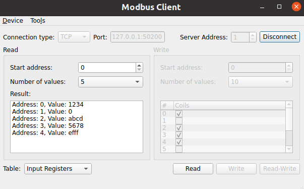

Modbus Client
The example implements a Modbus client application.
The example acts as Modbus client sending Modbus request via serial line or TCP. The shown dialog allows the definition of standard requests and displays incoming responses.
The example must be used in conjunction with the Modbus Server example or another Modbus device which is either connected via TCP or Serial Port.
Key classes used in this example:

Creating a QModbusClient
An instance of QModbusClient is required to perform any communication. Depending on the specified connection type, the example can instantiate a QModbusRtuSerialClient (for serial communication), or a QModbusTcpClient (for TCP-based communication).
auto type = static_cast<ModbusConnection>(index);
if (type == Serial) {
#if QT_CONFIG(modbus_serialport)
modbusDevice = new QModbusRtuSerialClient(this);
// Try to fill in the first available serial port name if the line edit
// is empty, or contains a url (assume that ':' is only a part of url).
const auto ports = QSerialPortInfo::availablePorts();
const auto currentText = ui->portEdit->text();
if (!ports.isEmpty() && (currentText.isEmpty() || currentText.contains(u':')))
ui->portEdit->setText(ports.front().portName());
#endif
} else if (type == Tcp) {
modbusDevice = new QModbusTcpClient(this);
const QUrl currentUrl = QUrl::fromUserInput(ui->portEdit->text());
// Check if we already have <ip address>:<port>
if (currentUrl.port() <= 0)
ui->portEdit->setText(QLatin1String("127.0.0.1:50200"));
}
Once the client is created, use the setConnectionParameter() method to specify the connection parameters. The parameters vary depending on the communication type:
const auto settings = m_settingsDialog->settings();
if (static_cast<ModbusConnection>(ui->connectType->currentIndex()) == Serial) {
modbusDevice->setConnectionParameter(QModbusDevice::SerialPortNameParameter,
ui->portEdit->text());
#if QT_CONFIG(modbus_serialport)
modbusDevice->setConnectionParameter(QModbusDevice::SerialParityParameter,
settings.parity);
modbusDevice->setConnectionParameter(QModbusDevice::SerialBaudRateParameter,
settings.baud);
modbusDevice->setConnectionParameter(QModbusDevice::SerialDataBitsParameter,
settings.dataBits);
modbusDevice->setConnectionParameter(QModbusDevice::SerialStopBitsParameter,
settings.stopBits);
#endif
} else {
const QUrl url = QUrl::fromUserInput(ui->portEdit->text());
modbusDevice->setConnectionParameter(QModbusDevice::NetworkPortParameter, url.port());
modbusDevice->setConnectionParameter(QModbusDevice::NetworkAddressParameter, url.host());
}
modbusDevice->setTimeout(settings.responseTime);
modbusDevice->setNumberOfRetries(settings.numberOfRetries);
After the client is created and all the parameters are specified, use QModbusClient::connectDevice() to connect to Modbus network.
Reading Data
To read data from Modbus server, the client needs to specify a server address and the parameters of objects that it wants to read:
The object parameters are represented by the QModbusDataUnit class:
QModbusDataUnit MainWindow::readRequest() const { const auto table = ui->writeTable->currentData().value<QModbusDataUnit::RegisterType>(); int startAddress = ui->readAddress->value(); Q_ASSERT(startAddress >= 0 && startAddress < 10); // do not go beyond 10 entries quint16 numberOfEntries = qMin(ui->readSize->currentText().toUShort(), quint16(10 - startAddress)); return QModbusDataUnit(table, startAddress, numberOfEntries); }
Once the parameters are collected, the sendReadRequest() method is used to send the actual request. The method returns a QModbusReply which should be processed in an asynchronous way, so the QModbusReply::finished() signal is used to check when the reply is ready.
if (auto *reply = modbusDevice->sendReadRequest(readRequest(), ui->serverEdit->value())) {
if (!reply->isFinished())
connect(reply, &QModbusReply::finished, this, &MainWindow::onReadReady);
else
delete reply; // broadcast replies return immediately
} else {
statusBar()->showMessage(tr("Read error: %1").arg(modbusDevice->errorString()), 5000);
}
Once the QModbusReply::finished() signal is received, the reply object can be used to get the data or to check for read errors:
void MainWindow::onReadReady() { auto reply = qobject_cast<QModbusReply *>(sender()); if (!reply) return; if (reply->error() == QModbusDevice::NoError) { const QModbusDataUnit unit = reply->result(); for (qsizetype i = 0, total = unit.valueCount(); i < total; ++i) { const QString entry = tr("Address: %1, Value: %2").arg(unit.startAddress() + i) .arg(QString::number(unit.value(i), unit.registerType() <= QModbusDataUnit::Coils ? 10 : 16)); ui->readValue->addItem(entry); } } else if (reply->error() == QModbusDevice::ProtocolError) { statusBar()->showMessage(tr("Read response error: %1 (Modbus exception: 0x%2)"). arg(reply->errorString()). arg(reply->rawResult().exceptionCode(), -1, 16), 5000); } else { statusBar()->showMessage(tr("Read response error: %1 (code: 0x%2)"). arg(reply->errorString()). arg(reply->error(), -1, 16), 5000); } reply->deleteLater(); }
Writing Data
To write the data to the Modbus server, the client needs to specify the server address, and the parameters of objects that it wants to write. As with reading the data, the QModbusDataUnit class is used to represent the information about the data to be written. This time the data also includes the desired values. The sendWriteRequest() method is used to write the desired data:
QModbusDataUnit writeUnit = writeRequest();
QModbusDataUnit::RegisterType table = writeUnit.registerType();
for (qsizetype i = 0, total = writeUnit.valueCount(); i < total; ++i) {
const auto addr = i + writeUnit.startAddress();
if (table == QModbusDataUnit::Coils)
writeUnit.setValue(i, writeModel->m_coils[addr]);
else
writeUnit.setValue(i, writeModel->m_holdingRegisters[addr]);
}
if (auto *reply = modbusDevice->sendWriteRequest(writeUnit, ui->serverEdit->value())) {
if (!reply->isFinished()) {
connect(reply, &QModbusReply::finished, this, [this, reply]() {
const auto error = reply->error();
if (error == QModbusDevice::ProtocolError) {
statusBar()->showMessage(tr("Write response error: %1 (Modbus exception: 0x%2)")
.arg(reply->errorString()).arg(reply->rawResult().exceptionCode(), -1, 16),
5000);
} else if (error != QModbusDevice::NoError) {
statusBar()->showMessage(tr("Write response error: %1 (code: 0x%2)").
arg(reply->errorString()).arg(error, -1, 16), 5000);
}
reply->deleteLater();
});
} else {
// broadcast replies return immediately
reply->deleteLater();
}
} else {
statusBar()->showMessage(tr("Write error: %1").arg(modbusDevice->errorString()), 5000);
}
Like with reading the data, the returned QModbusReply object is used to check for write errors.
Running the Example
To run the example from Qt Creator, open the Welcome mode and select the example from Examples. For more information, visit Building and Running an Example.